Causes of Stress in Teens
Teen stress can be caused by a myriad of things; however; it should be noted that the issues that will be specifically focused on will involve stress in relation to school.
According to American Psychological Association for the Stress in America Survey, 83% of teenagers report school as a source of their stress. But what are the reasons behind that stress? In today's day and age, pressures to perform well in highschool are at an all time high. The most notable colleges expect students to maintain straight A's and have a plethora of after school activites and partake in volunteer work. These expectations to perform exceedingly well and still have a social life are on spevific cause of highschool stress. According to USA Today, 59% of teens report that managing their time to balance all activities being a stressor. In addition to that, students are constantly being told that after highschool they experience "the real world". And according to USA Today, 69% report the uncertainty of their future after highschool being a source of their stress (ie: having to choose a college).
Effects of Stress in Teens
The effects of stress vary drastically from person to person. Anger,Anxiety, and even depression can be potential consequences of stress. USA Today reports that 40% of teens feel irrationally angry, and 36% feel extreme nervousness and anger. 1/3 say stress makes them feel overwhelmed, depressed, or sad. And emotional impacts aren't the only ones. 40% say they neglected responsibilities at home because of stress; 21% say they neglected work or school because of stress;
32% say they experience headaches because of stress; 26% report changes in sleeping habits;
26% report snapping at or being short with classmates or teammates when under stress. Many teens report lying awake at night (35 percent), overeating or eating unhealthy foods (26 percent), and skipping meals (23 percent) due to stress in the past month. The report warns that teens are at risk of a variety of physical and emotional ills and potentially shorter lifespans than their elders if they don't act to "reverse their current trajectory of chronic illness, poor health and shorter lifespans."
How YOU Can Help
Mental health in essentially ignored by adults. USA today stated that "Despite anecdotal reports of high stress, researchers say stress itself in adolescents hasn't been studied broadly; global comparisons have focused on adult stress rather than teens." Emotional changes: Your teen might appear agitated, anxious, and/or depressed. Pay attention to changes in behavior.
Physical changes: Teens under stress are likely to get sick more often and complain of headaches, stomachaches, and other aches and pains.
Behavioral changes: Look for changes in eating or sleeping habits, and avoidance of normal daily activities.
Cognitive changes: You might notice decreased concentration, forgetfulness, and/or the appearance of carelessness.

.png)